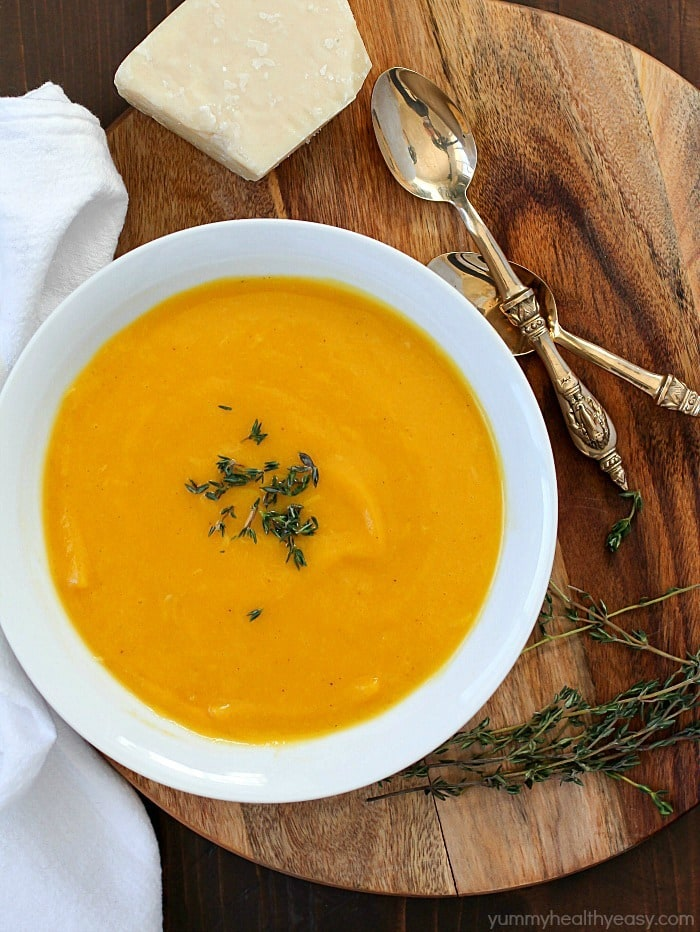

Super Simple Soup

A warming, healthy butternut squash soup
Made with just a few ingredients, this delicious soup is sure to become one of your favourites!
Ingredients
- 1/2 tablespoon olive oil
- 2 garlic cloves, minced
- 1 onion, diced
- 1 butternut squash, peeled and diced into cubes
- 1 litre vegetable stock
- 1-2 teaspoons salt
Steps
- In a heavy pot, heat olive oil over medium heat. Add onion and garlic. cook until softened, about 5 minutes.
- Add cut up butternut squash and vegetable broth. Bring to a boil then cover and simmer for 15-20 minutes until squash is softened.
- Carefully pour entire contents of pot into blender. Add salt.
- Blend until smooth. Serve in bowls with thyme if desired. Enjoy!
Home